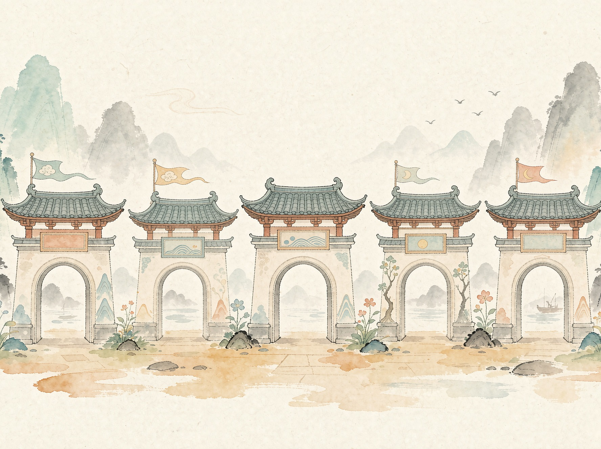
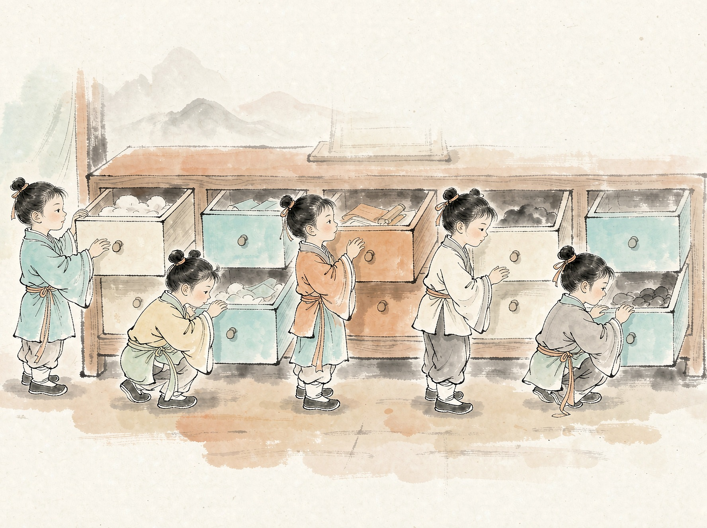

梁唐晋，及汉周：承接上一课「二十传，三百载」。
唐亡之后，中原相继有五朝：后梁、后唐、后晋、后汉、后周。
五朝皆都中原，皆以禅代相承，皆不过十余年，更替之速为前史所无。
此句只举其名，不举其事，正为下句「称五代，皆有由」蓄势。
对比：二十传，三百载 / 梁唐晋，及汉周
上一句是一朝之长，此句是五朝之促。三百年对五十三载，一长一促，对照之下，更见五代之速朽。
对比前文阴阳太和：唐末藩镇之弊未除，武人拥兵、废立由己，阳亢无制而阴不承，故合不住一日之局。五代之速亡，正是太和久失之后的余波。
勘破俗见：两类常见偏差。其一，把五代只看作一串国号，不问其所以速亡；其二，以五代全无文教、全无治绩。契合般若范式：佛说五代，即非五代，是名五代。五朝名号皆假，其速替之相，是兵权无制、财赋无着、人心无归三缘共成。
唐朝灭亡以后，中原先后换了五个朝代：后梁、后唐、后晋、后汉、后周。
这五个朝代合起来才五十多年，每个都很短。
每一朝都是靠兵将拥立、禅让相接。
换得快，说明底下的根基没扎稳。


落到心上理解
唐之三制相依，一处坏而全局动——府兵坏则边兵归节度，均田坏则租调改为两税，财赋既倚东南而中原兵柄又失约束，晚唐之局遂不可复。
国号、年号、禅仪都是器相；兵权有制、财赋有出、人心有归才是不变之体。五代之促，正因三者俱无。无制之兵，无着之财，无归之心，国虽立而不立。
不执「新朝已立」之相，回看其兵、其财、其人心，便是无住。
五代只是一串国号，别无可论
其速替之由在兵权无制、财赋无着、人心无归，恰是唐末积弊的延长
五代全无文教治绩，一片荒芜
后唐雕印九经、后周革除积弊、世宗整军理财，皆有可称
朝代短，只因君主不贤
君主之贤否只是表层，结构无制方是深层
一、勘俗见。五代并非一片空白。后唐雕印九经、后周世宗整军理财，都是乱世中的建树，不可一概抹去。
二、现代对照。一个地方频繁换负责人，多半不是人不行，而是规矩没立住。
三、承接常变主线。国号、帝系（可变之相）翻覆如棋；兵权有制、财赋有着、人心有归（常）是不变内核。
四、承接教与学二分。后唐镂版九经，是乱世存教之举；教之脉未断，故宋兴而文教可续。
承接选择力练习：看见「换得快」背后的「没扎稳」，先扎稳，再谈换。
字义与句读
梁：后梁（九〇七至九二三）。唐：后唐（九二三至九三六）。晋：后晋（九三六至九四七）。汉：后汉（九四七至九五〇）。周：后周（九五〇至九六〇）。及：以及。
全句释义：唐亡之后，中原相继立后梁、后唐、后晋、后汉、后周五朝，合五十三载，史称五代。
二命题考辨
（1）五代速替的三重根源
兵权无制：唐末节度使拥兵自擅，牙兵废立主帅如易仆隶；后梁、后唐皆以兵得国，亦以兵失国。
财赋无着：战乱频仍，赋税繁苛，仓廪不继；赏军之费常出于临时横敛，财政无长期之基。
人心无归：五十余年间禅代五次，士人朝秦暮楚，百姓无所依恃，正统之念遂淡。
三者相因，故国虽立而根基不立。
（2）乱世中的建树不可没
后唐明宗时冯道倡议，以雕版印九经，为官方大规模刊印经籍之始，文教赖以不坠。
后周世宗整军练卒、均定田租、毁佛寺以充军费、修汴京水道，皆有革弊振衰之实。
乱世未必无治，只是治不能久；其可称者，往往是后来承平之资。
（3）般若范式互参
五代、五朝国号、禅代，皆是因缘假名。
联动三才五蕴太极空杯模型：兵有制、财有着、心有归，是杯中空；兵甲、府库、玺绶，是器相。器相争夺不休，空已无存，则五朝如走马。
呼应「本乎数」：唐之三百年为阳极，五代五十三年为其阴承；阴阳失序，故促。
延伸义理：
《金刚经》：一切贤圣，皆以无为法而有差别。五朝之君，得失在其有无「无为」之度——不妄兴兵、不妄取财。
《道德经》：兵强则灭，木强则折。以兵立国者，终以兵亡。
《坛经》：心若住法，名为自缚。五朝皆住于兵与位，故自缚而速尽。
三跨典互参（老庄、般若对照）
《道德经》：师之所处，荆棘生焉。五代兵争不休，正合此象。
《庄子》：小知不及大知。五朝只见眼前兵利，不见长治之远图。
串联前文：唐历二十传、近三百年而亡；中原遂入五代之速替；宋兴乃收其局。
四和前面课程的张力
次第链条继续延伸：
……二十传，三百载 → 梁唐晋，及汉周
呼应「曰仁义，礼智信」：五代以兵与诈相尚，仁义礼智信五常几乎尽失；宋兴而后渐复；
呼应「教之道，贵以专」：后唐雕印九经，是乱世中「专」于文教的一线，教脉未绝；
呼应「玉不琢，不成器」：五代之乱是一面铜镜，照见「无制之兵必反噬其主」。
五代五朝皆以禅代相接，此种「禅让」与古之禅让，名同而实异在何处？
兵权无制为五代通病，何以后周世宗稍能整之，而其效未及大成？
乱世之中，文教何以反成后来承平之资？